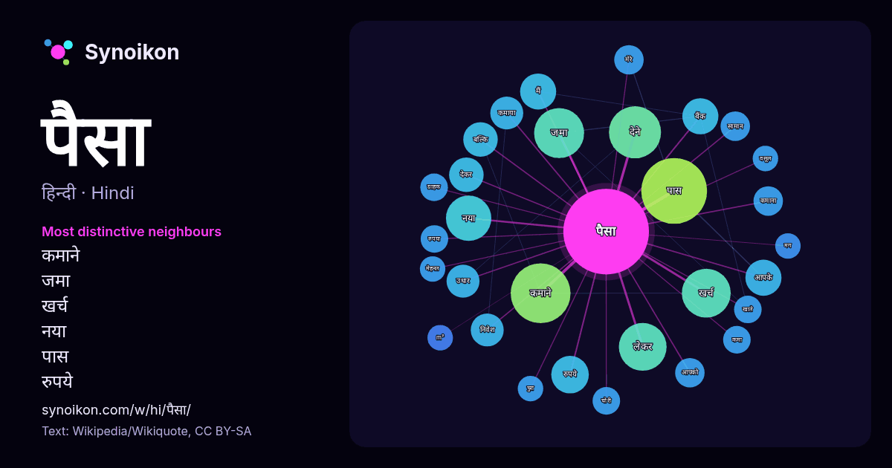

हिन्दी · लोकप्रिय शब्द
पैसा
“money” · विकिपीडिया, Wikiquote के 891 प्रयोगों में इसके आसपास मिले शब्द।

सबसे विशिष्ट पड़ोसी
- कमाने 32×
- जमा 19×
- खर्च 18×
- नया 13×
- पास 12×
- रुपये 11×
- कमाया 11×
- आपके 10×
- उधार 10×
- देने 9.4×
- लेकर 9.2×
- देकर 9.1×
- कमाना 8.9×
- निवेश 8.2×
- बैंक 8.1×
- कमा 7.9×
- रुपया 7.7×
- सामान 7.3×
- चोरी 7.2×
- बल्कि 7.2×
× = सामान्य विकिपीडिया टेक्स्ट की तुलना में कितने गुना अधिक।
सबसे अधिक आने वाले पड़ोसी
- पास 40
- कमाने 33
- देने 25
- जमा 23
- कम 22
- खर्च 22
- लेकर 21
- काम 19
- नया 19
- लोगों 19
- देता 17
- भारतीय 16
- लोग 16
- अधिक 15
- चाहिए 15
- उसकी 14
- उसने 14
- व्यक्ति 14
- करके 13
- रुपये 13
संदर्भ में
- पैसा अनेक देशों में एक मौद्रिक इकाई है। भारत, पाकिस्तान और नेपाल में एक पैसा एक रुपये का 1⁄100 होता है। बांग्लादेश में एक पैसा एक टका का 1⁄100 होता है। Wikipedia snippets · पैसा
- पैसा ये पैसा 1985 में बनी हिन्दी भाषा की फ़िल्म है। नूतन - लक्ष्मी बिन्दू - शांति गुलशन ग्रोवर - गुड्डू पिंचू कपूर - मद्यालय का मालिक सत्येन्द्र कपूर - Wikipedia snippets · पैसा ये पैसा (1985 फ़िल्म)
- पैसा ही पैसा 1956 में बनी हिन्दी भाषा की फिल्म है। आई एस जौहर किशोर कुमार - किशोर लीला मिश्रा मुकरी मुराद राधाकृष्णन शकीला माला सिन्हा - माला पैसा ही पैसा Wikipedia snippets · पैसा ही पैसा (1956 फ़िल्म)
- पैसा हो पैसा एक भारतीय बॉलीवुड फिल्म है। जिसका निर्देशन मुक्था सुंदर ने किया है। यह फिल्म 3 अप्रैल 2015 को सिनेमा घरों में प्रदर्शित हुई। अश्विन इंजिनियरिंग Wikipedia snippets · पैसा हो पैसा
- भारतीय पैसा (अंग्रेज़ी: Paisa; बहुवचन: Paise) एक मौद्रिक इकाई है, जो एक रुपये का 1⁄100 है। पैसा को पहले 1 अप्रैल 1957 में परिचय किया गया था, जब भारतीय Wikipedia snippets · भारतीय पैसा
- पैसा या प्यार 1969 में बनी हिन्दी भाषा की फिल्म है। अशोक कुमार माला सिन्हा तनुजा पैसा या प्यार इंटरनेट मूवी डेटाबेस पर Wikipedia snippets · पैसा या प्यार (1969 फ़िल्म)
- एक पैसा सिक्का ( हिन्दी: पैसा ) भारतीय रुपये का एक पूर्व मूल्यवर्ग है। 1 सिक्का बराबर1⁄100भारतीय रुपये एक सौवां)। पैसे का प्रतीक है (). 1955 में, भारत Wikipedia snippets · भारतीय १ पैसे का सिक्का
- ओला पैसा बाट दीईस। मग थोड दिवसमा लाहानो पोऱ्या समदो पैसा जमा कर-सरी दूर मुलुखमा चली गयो। आनी वहॉ उघडोपनान रह-सरी आपलो पैसा गमादीस। मग ओन सर्व पैसा खर्ची Wikipedia snippets · हल्बी भाषा
और शब्द
- इतिहास
- ईश्वर
- कार्य
- कुत्ता
- गर्मी
- गाना
- घंटी
- घड़ी
- घोड़ा
- चाय
- चित्रकला
- छाया
- जंगल
- जलवायु
- जीवन
- तूफ़ान
- दर्पण
- द्वीप
- नक्षत्र
- नमक
- परिवार
- पहाड़
- पानी
- प्रकृति
- बगीचा
- बिल्ली
- भाषा
- भोजन
- माता
- मानचित्र
- मृत्यु
- मौन
- रेगिस्तान
- रेलगाड़ी
- रोटी
- वर्षा
- विज्ञान
- शक्ति
- शरद
- शहद
- शहर
- सड़क
- सत्य
- समय
- सर्दी
- सेतु
- स्वर्ण
- स्वास्थ्य
- हृदय
2026-10-09 को डिफ़ॉल्ट सेटिंग्स (±5 शब्द, मध्यम कॉर्पस) के साथ पहले से गणना की गई। इंटरैक्टिव मानचित्र इसे लाइव डेटा से ताज़ा कर सकता है।
मशीन-अनूदित इंटरफ़ेस; सुधारों का स्वागत है।